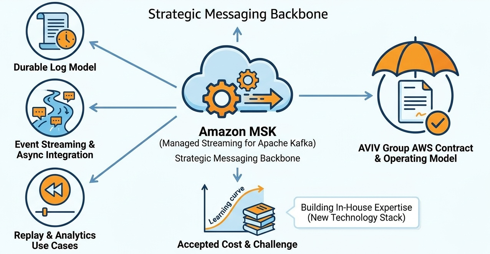

Infrastructure
Messaging Infrastructure: Standardize on Amazon MSK as the Kafka Backbone

Image generated by Google Gemini (gemini-3-pro-image-preview)
Infrastructure

Image generated by Google Gemini (gemini-3-pro-image-preview)